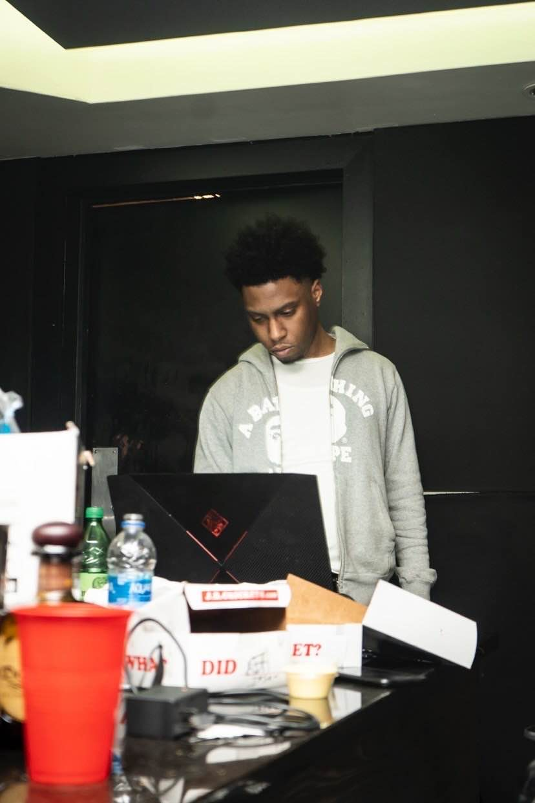

Return

Meet YSOnthetrack, the 27-year-old music producer hailing from New Jersey. Known for his
distinctive style that blends trap elements with melodic bounce, YS has carved out a niche for
himself in the industry with his infectious beats and dynamic productions.
highlight credits


Meet YSOnthetrack, the 27-year-old music producer hailing from New Jersey. Known for his
distinctive style that blends trap elements with melodic bounce, YS has carved out a niche for
himself in the industry with his infectious beats and dynamic productions.
YS's impressive portfolio includes collaborations with acclaimed artists such as Desiigner and
Wiz Khalifa, where his production skills have helped shape chart-topping hits and contributed to
the artists' distinctive sounds. His work reflects a deep understanding of music dynamics and a
knack for crafting beats that evoke emotion and drive.
Currently, YSOnthetrack is channeling his creative energies into collaborations with rising stars
like 42Dugg and ChickenP, aiming to elevate their music with his signature sound.
With New Jersey as his home base and a growing list of successful collaborations under his
belt, YSOnthetrack is poised to continue making waves in the music scene. Keep an ear out for
his upcoming projects as he continues to shape the future of trap and melodic beats with his
unparalleled talent and passion for music production.
highlight credits
> dj holiday / wiz khalifa - “no stress”
> desiigner - “monstas & villains”
> YS has unreleased songs with chicken p